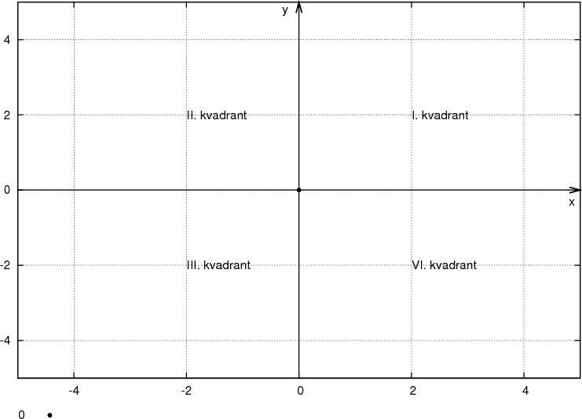

KOORDINATNI SISTEM
...by Gregor Rus, Boštjan Skok, Matej Stipič
KVADRANTI
Koordinatni sistem je razdeljen na štiri kvadrante:

Iz grafa lahko razbermo, da:
- imajo v prvem kvadrantu točke pozitivno absciso in ordinato
- imajo v drugem kvadrantu točke negativno absciso in pozitivno ordinato
- imajo v tretjem kvadrantu točke negativno absciso in negativno ordinato
- imajo v četrtem kvadrantu točke pozitivno absciso in negativno ordinato
- simetralo lihih kvadrantov, ki jo določa linearna enačba y = x
- simetralo sodih kvadrantov, ki jo določa linearna enačba y = - x